Some photos of LaPriel, Myron and Clora Anderson as children
Home
Histories
Charts
Photos
Maps
Restricted
News
Info
Contact
On any of these pictures, click to enlarge, double-click to return to smaller size
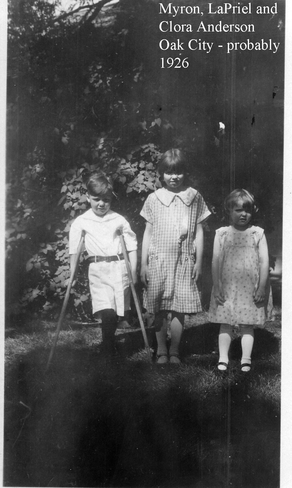 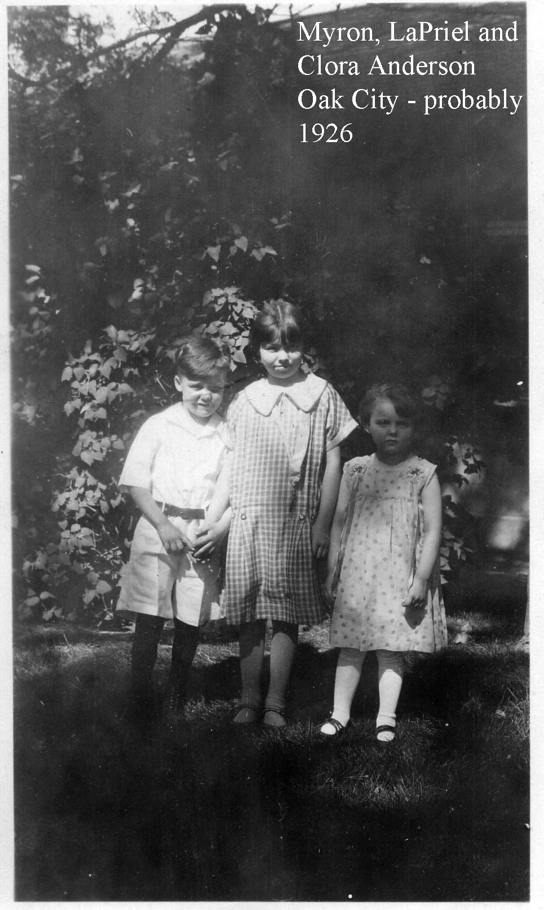
Myron, LaPriel and Clora at the Eddie Jacobson home in Oak City. Myron is with his crutches in one of the pictures, which he had for several years.
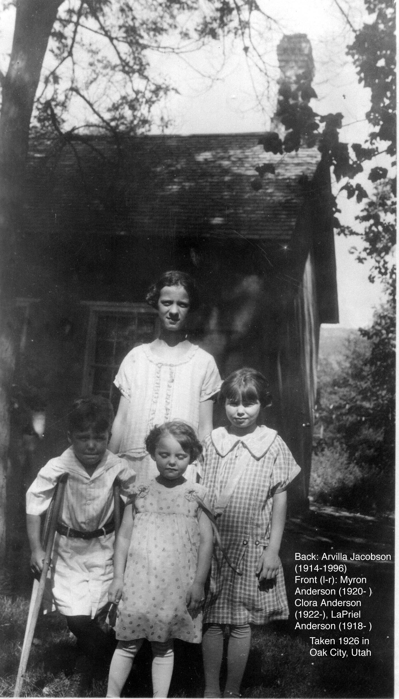
Arvilla is with the three in this picture. Arvilla is about 12, Myron 6, LaPriel 7 and Clora about 4 years old.
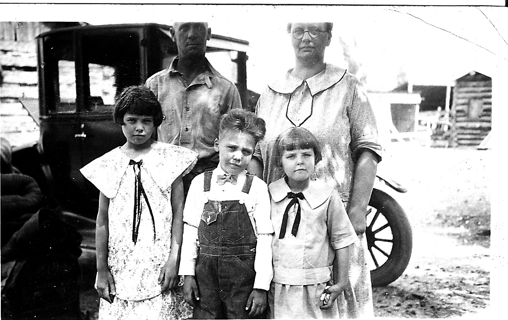
The three children standing with Eddie and Delilah in front of their car.
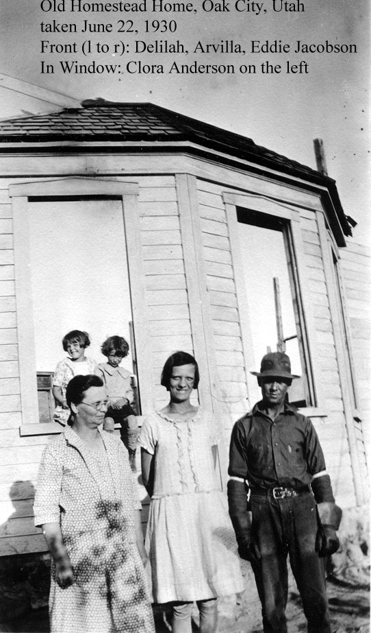 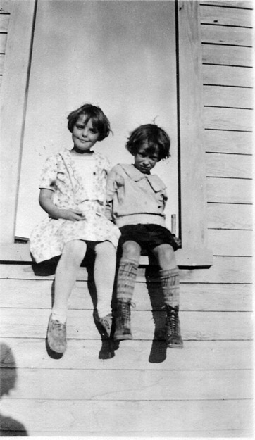
Pictures taken at the old homestead house between Oak City and the canyon. Clora and a cousin (probably - Clora is on the left) in the window, Delilah, Arvilla and Eddie in the front - taken in 1930.
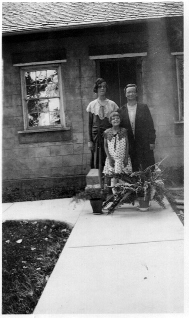
Arvilla, Clora and Delilah, at the Oak City home, taken 1930
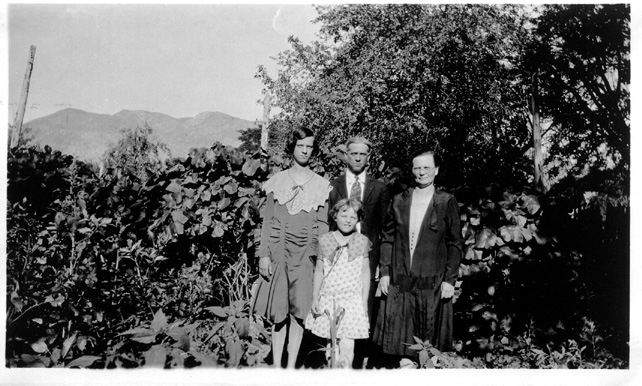
Arvilla, Eddie, Delilah and Clora near the Oak City home, taken 1930
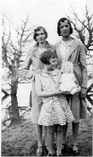
Martha Anderson, Arvilla Jacobson, Clora Anderson and Tutsie (a doll) at the reservoir, taken Easter 1931
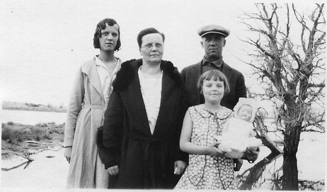
Arvilla Jacobson, Delilah and Eddie Jacobson in the back, Clora Anderson with Tutsie (a doll) in front, at the reservoir, taken Easter 1931
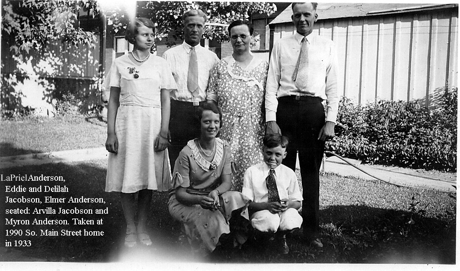
At Elmer's home at 1990 South Main Street, Salt Lake City, Utah in 1933.
(l. to r.) LaPriel Anderson, Eddie and Delilah Jacobson, Elmer Anderson
(seated) Arvilla Jacobson and Myron Anderson.